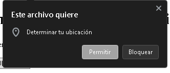
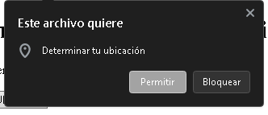
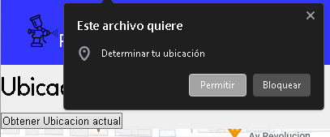

Usaremos la API de Geolocation en el apartado de ubicacion para el momento donde veas el mapa del negocio podras presionar un boton por si el usuario desea ver su ubicacion actual y con esto puedas ubicarte aun mejor con esto.
Lo que hace esta API es pedir permiso al usuario para mostrar la ubicacion del usario actual.

La importancia de esta API en nuestra web es para poder ubicar mejor a los usuarios al momento de querer ver la ubicacion de la tienda, lo cual es muy util para el usuario. Al igual que en nuestra pagina, actualmente se usa en muchisimas otras paginas actuales de tiendas que ayuda al usuario a poder encontrar mejor el lugar o tiendas cercanas.
La utilidad que tendra esta API puede aplicarse al querer ver la ubicacion de la tienda, tendra un boton donde se podra
el usuario presionarlo por si quiere ver su ubicacion actual y asi poder ubicarse mejor a la hora de querer ver el mapa.
Este es un EJEMPLO DE LA API:
